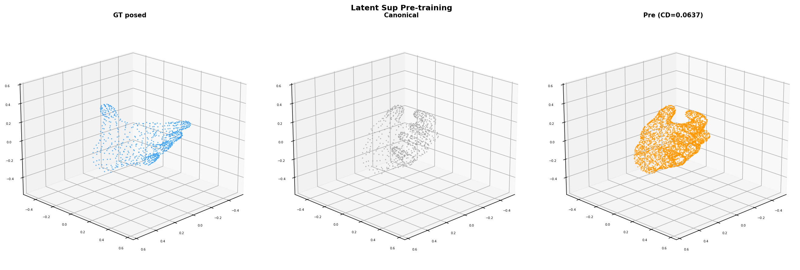
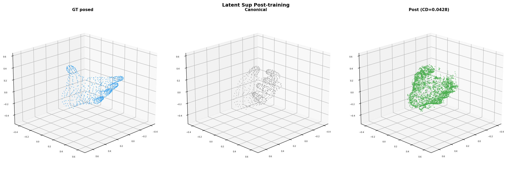

GT posed (blue), pre (orange, CD=0.064), post (green, CD=0.043).
Goal: Better loss balance (λ=0.001 for latent vs 1.0 before) and longer training to push deformation learning further.
| Metric | λ=1.0, 500 steps (prev) | λ=0.001, 1000 steps (new) |
|---|---|---|
| Pre-train CD | 0.0634 | 0.0637 |
| Post-train CD | 0.0438 | 0.0428 |
| Improvement | -31% | -33% |
| Best CD | 0.0437 | 0.0420 (step 980) |
| Gap closed | 23% | 25% |
| Mesh loss at step 500 | 0.008 | 0.007 |
| Mesh loss at step 1000 | N/A | 0.007 |

Pre-training: pred (orange) matches canonical. CD=0.064.

Post-training (1000 steps): pred (green) deformed toward GT. CD=0.043.
GT posed (blue), pre (orange, CD=0.064), post (green, CD=0.043).
With λ=0.001, mesh loss contributes equally from the start (both ~0.015), leading to better convergence: CD 0.043 vs 0.044 with λ=1.0. Longer training (1000 vs 500 steps) provides marginal additional gain.
After step 800, CD oscillates around 0.042–0.043. This likely reflects the spatial structure ceiling: the canonical bottleneck coordinates limit how much the decoder can deform the mesh. Further improvement requires either multi-frame training or architectural changes (coordinate prediction, denser bottleneck).